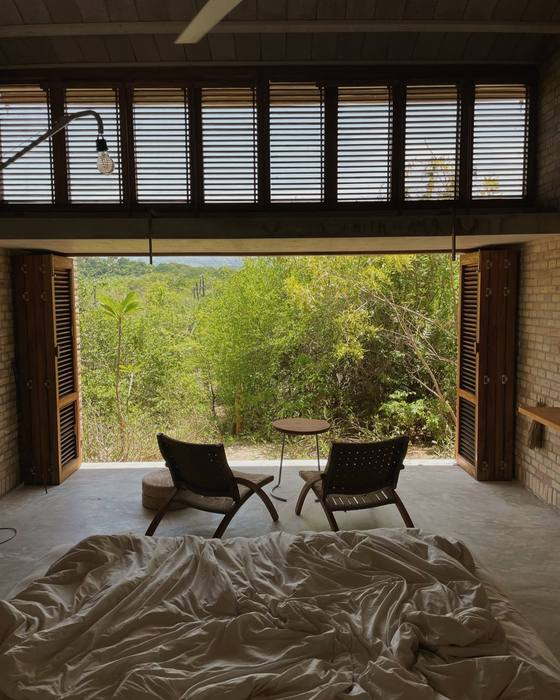
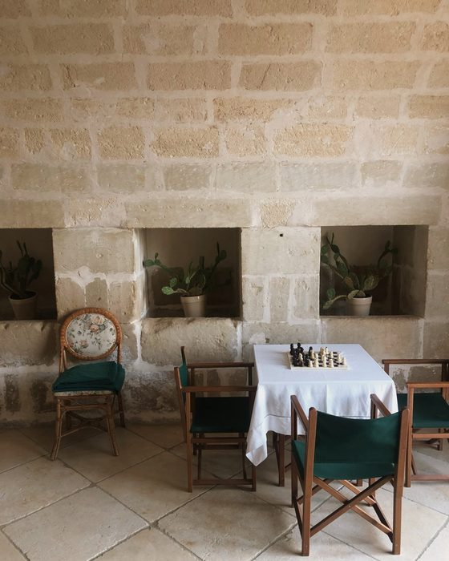

Content that AI can read.
I stay in independent properties and make the work they need. The difference is the brief. I check what the AI platforms already say about a place, then shoot against what's missing.


Eight properties · Mexico, Italy, SingaporeSee the work →